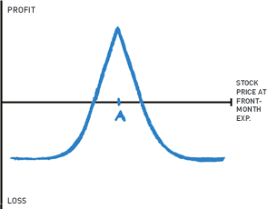

Long Calendar Spread w/Calls
AKA Time Spread; Horizontal Spread
|

NOTE: The profit and loss lines are not straight. That’s because the back-month call is still open when the front-month call expires. Straight lines and hard angles usually indicate that all options in the strategy have the same expiration date. The StrategyWhen running a calendar spread with calls, you’re selling and buying a call with the same strike price, but the call you buy will have a later expiration date than the call you sell. You’re taking advantage of accelerating time decay on the front-month (shorter-term) call as expiration approaches. Just before front-month expiration, you want to buy back the shorter-term call for next to nothing. At the same time, you will sell the back-month call to close your position. Ideally, the back-month call will still have significant time value. If you’re anticipating minimal movement on the stock, construct your calendar spread with at-the-money calls. If you’re mildly bullish, use slightly out-of-the-money calls. This can give you a lower up-front cost Because the front-month and back-month options both have the same strike price, you can’t capture any intrinsic value on the options. You can only capture time value. However, as the calls get deep in-the-money or far out-of-the-money, time value will begin to disappear. Time value is maximized with at-the-money options, so you need the stock price to stay as close to strike A as possible. For this Playbook, I’m using the example of a one-month calendar spread. But please note it is possible to use different time intervals. If you’re going to use more than a one-month interval between the front-month and back-month options, you need to understand the ins and outs of rolling an option position. Options Guy's Tips
To run this strategy, you need to know how to manage the risk of early assignment on your short options. So be sure to read What is Early Exercise and Assignment and Why Does it Happen? |
The Setup
Who Should Run ItSeasoned Veterans and higher NOTE: The level of knowledge required for this trade is considerable, because you're dealing with options that expire on different dates. When to Run It
Break-even at ExpirationIt is possible to approximate break-even points, but there are too many variables to give an exact formula. Because there are two expiration dates for the options in a calendar spread, a pricing model must be used to “guesstimate” what the value of the back-month call will be when the front-month call expires. TradeKing’s Profit + Loss Calculator can help you in this regard. But keep in mind, the Profit + Loss Calculator assumes that all other variables, such as implied volatility, interest rates, etc., remain constant over the life of the trade — and they may not behave that way in reality. The Sweet SpotYou want the stock price to be at strike A when the front-month option expires. Maximum Potential ProfitPotential profit is limited to the premium received for the back-month call minus the cost to buy back the front-month call, minus the net debit paid to establish the position. Maximum Potential LossLimited to the net debit paid to establish the trade. NOTE: You can’t precisely calculate your risk at initiation of this strategy, because it depends on how the back-month call performs. TradeKing Margin RequirementAfter the trade is paid for, no additional margin is required if the position is closed at expiration of the front-month option. As Time Goes ByFor this strategy, time decay is your friend. Because time decay accelerates close to expiration, the front-month call will lose value faster than the back-month call. Implied VolatilityAfter the strategy is established, although you don’t want the stock to move much, you’re better off if implied volatility increases close to front-month expiration. That will cause the back-month call price to increase, while having little effect on the price of the front-month option. (Near expiration, there is hardly any time value for implied volatility to mess with.) |
Check your strategy with TradeKing tools
|
|
 When establishing one-month calendar spreads, you may wish to consider a “risk one to make two” philosophy. That is, for every net debit of $1 at initiation, you’re hoping to receive $2 when closing the position. Use TradeKing’s Profit + Loss Calculator to estimate whether this seems possible.
When establishing one-month calendar spreads, you may wish to consider a “risk one to make two” philosophy. That is, for every net debit of $1 at initiation, you’re hoping to receive $2 when closing the position. Use TradeKing’s Profit + Loss Calculator to estimate whether this seems possible.
Don’t have a TradeKing account? Open one today!
Today's Trader Network
|
All-Star Trade Report |
Options Guy Blog |
Videos, webinars and more |